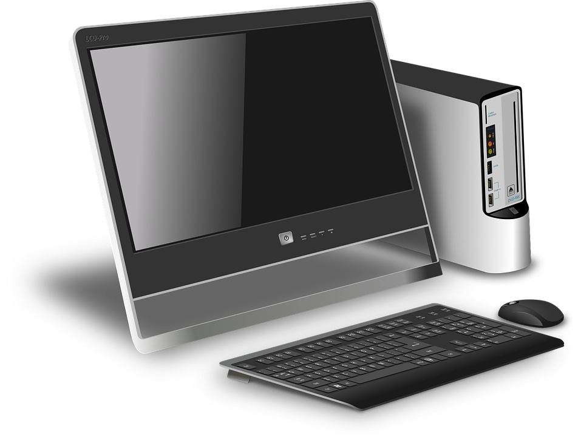
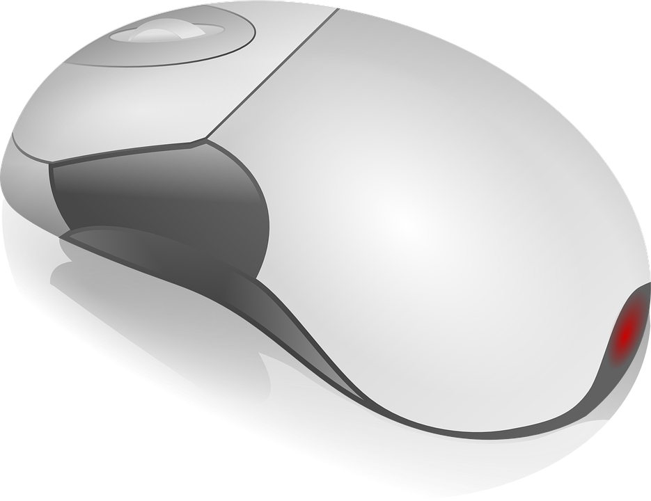

Imprimante

Un vaste ensemble de cartes puissantes et fiables pour tous les budgets.
Imprimante Définition :L'imprimante est un périphérique permettant d'écrire du texte et communiquer avec l'ordinateur. Les claviers possèdent une centaine de touches donc les lettres de l'alphabet, les chiffres, les accents et des touches spéciales pour interagir avec le système
Computer

Un vaste ensemble d'ordinateurs puissants et fiables pour tous les budgets.
Un ordinateur portable ou carte vidéo (anciennement, par abus de langage, une carte VGA), ou encore un adaptateur graphique, est une carte d’extension d’ordinateur dont le rôle est de produire une image affichable sur un écran.
Souris

Un vaste ensemble de souris puissants et fiables pour tous les budgets.
La souris :La souris est un périphérique permettant d'écrire du texte et communiquer avec l'ordinateur. Les claviers possèdent une centaine de touches donc les lettres de l'alphabet, les chiffres, les accents et des touches spéciales pour interagir avec le système